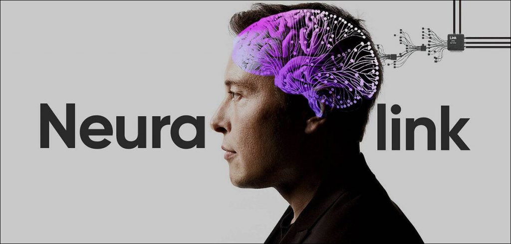
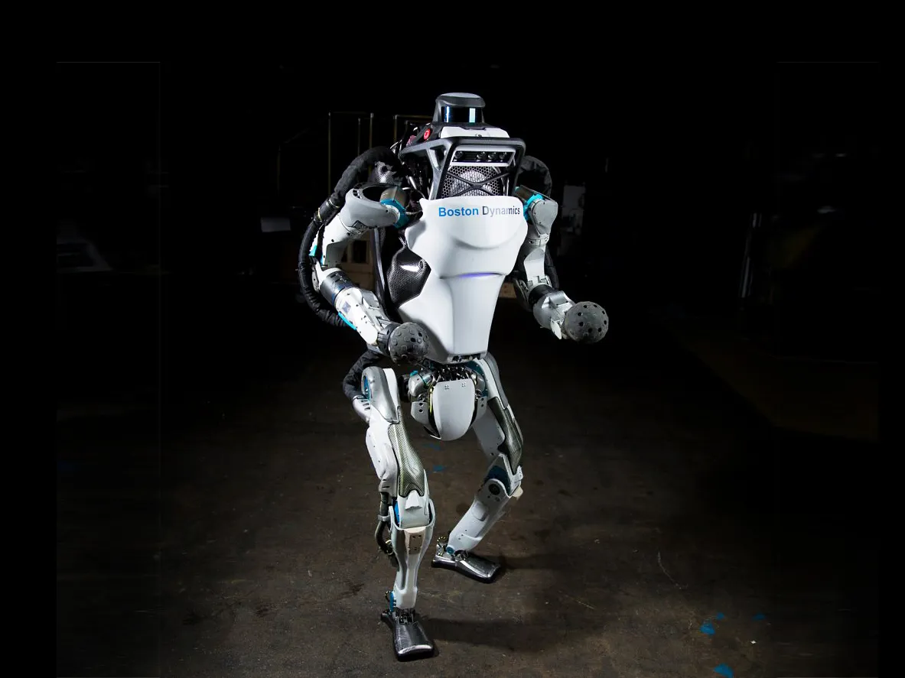
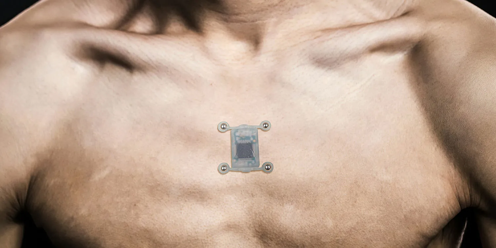

The Real World of Cyberpunk
"Welcome to the desert of the real."
Cyberpunk, as a genre, often explores the convergence of high technology with societal issues like inequality, corporate control, and dystopian futures. While some of the concepts from cyberpunk fiction are still imaginative, a lot of real-world tech has emerged that reflects elements of this genre. Here are a few examples of real technologies that have cyberpunk-inspired qualities...
Augmented Reality (AR) and Virtual Reality (VR)
- What it is: AR and VR technologies have developed significantly in recent years. AR overlays digital information on the real world, while VR immerses the user in a completely virtual environment.
- Cyberpunk influence: In cyberpunk, people often interact with digital spaces through advanced interfaces, and "neural links" are commonly featured. Modern AR glasses (like Microsoft HoloLens or Google Glass) and VR headsets (like Oculus Rift and HTC Vive) bring us closer to these futuristic interfaces seen in films like Blade Runner or The Matrix.
Neural Implants and Brain-Computer Interfaces (BCIs)
- What it is: BCIs allow for direct communication between the brain and an external device, enabling things like controlling machines or enhancing brain functions.
- Cyberpunk influence: In cyberpunk literature, characters often have cybernetic enhancements that connect directly to their nervous system, enabling augmented abilities and direct digital interfacing. Companies like Neuralink and Synchron are working on technology that aims to link human brains to computers for medical and cognitive enhancement.
Facial Recognition Technology
- What it is: A form of biometric identification that uses unique facial features to identify and authenticate people.
- Cyberpunk influence: This technology is commonly used in dystopian cyberpunk settings where privacy is virtually non-existent, and corporations or governments have extensive surveillance systems. In the real world, facial recognition is already used by law enforcement and even tech companies for security purposes (e.g., Apple's Face ID, surveillance cameras in public spaces).
Autonomous Vehicles and Drones
- What it is: Self-driving cars and delivery drones are already in development and some are operational in specific areas.
- Cyberpunk influence: Many cyberpunk worlds, such as Ghost in the Shell or Altered Carbon, depict cities where autonomous vehicles zip through neon-lit streets, and drones are ubiquitous, whether for delivery or surveillance. Real-world examples include self-driving cars from companies like Tesla and autonomous delivery drones from Amazon.
Smart Cities
- What it is: Smart cities use technology and data to improve urban life, including managing traffic, reducing energy usage, and optimizing public services.
- Cyberpunk influence: Many cyberpunk settings, such as in Blade Runner, feature hyper-dense cities where surveillance and technological infrastructure shape everyday life. In the real world, cities like Singapore and Dubai are embracing smart city concepts, incorporating IoT sensors, surveillance, and data analytics to manage their environments.
Genetic Engineering & Biohacking
- What it is: Genetic modification, CRISPR technology, and biohacking allow humans to alter their DNA, enhancing health or altering physical traits.
- Cyberpunk influence: In many cyberpunk narratives, humans genetically modify themselves or are altered through biotech to improve abilities or extend life. CRISPR and biohacking are real-life technologies that offer the potential to change human biology. Biohackers implant chips or modify their bodies in ways that echo cyberpunk’s vision of a tech-enhanced human existence.
Advanced Robotics and Exoskeletons
- What it is: Robots and wearable suits that enhance human strength or assist with physical tasks.
- Cyberpunk influence: Robots, often with humanoid forms or extreme functionality, are common in cyberpunk worlds, and exoskeletons are often worn by characters to augment their physical abilities. Companies like Boston Dynamics have created robots that can perform complex movements, and exoskeletons from companies like Ekso Bionics are already being used in rehabilitation and by industrial workers to enhance mobility and strength.
Cryptocurrency and Blockchain
- What it is: Digital currencies (like Bitcoin) and decentralized ledger technology (blockchain) are reshaping the way financial transactions and digital assets are managed.
- Cyberpunk influence: Cyberpunk often explores underground economies and hacking, where the traditional banking system is disrupted. Cryptocurrencies and decentralized finance (DeFi) echo this idea of bypassing centralized financial institutions. In the real world, blockchain technologies are being used not just for currencies but for secure data sharing and smart contracts.
Wearable Tech and Body Augmentation
- What it is: Devices like smartwatches, fitness trackers, and even implants that enhance human abilities or monitor health.
- Cyberpunk influence: In cyberpunk stories, characters often wear augmented reality visors or have implanted tech to enhance their senses. Real-world wearables, such as Apple Watch or even subdermal implants like The North Sense (which gives users a sense of direction), start to blur the line between biology and technology.
Social Media and Cyber-Identity
- What it is: The digital footprints people leave on social platforms and how individuals can create an online persona.
- Cyberpunk influence: In cyberpunk, characters often navigate digital spaces, and their identities are tied to the online world, where corporations track and control users' data. Platforms like Facebook, Instagram, and Twitter reflect this notion of living in a hyper-connected society where personal data is a commodity.
Final Thoughts
These technologies, while still emerging in many cases, share common themes with cyberpunk’s exploration of technology, identity, and society. Some of them could have profound implications for privacy, ethics, and human rights, just like in cyberpunk stories.